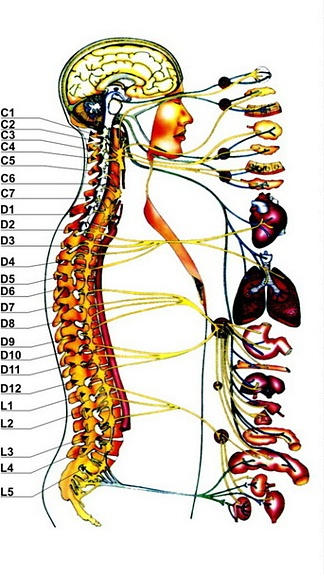
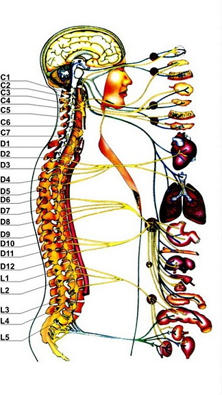

Types of Massage
1. Remedial Massage.
The term Remedial Massage and Therapeutic Massage means the same thing. It is called Remedial Massage because the founders and researchers who developed this method called it Remedial Massage. Massage therapy is therapy by means of massage. Therapy means health benefits to the human body and that is what Remedial massage therapy stands for.

Therapeutic Massage deals with procedures designed to treat back and limb disorders that could be results of sports related injuries, industrial injuries, car accidents and etc. Medical massage is one of the most effective and simple tools for reaching rapid and sustained results in various disorders including sciatic nerve neuralgia, hypertension, impingement syndromes, and lower back disorders. Medical massage is a comprehensive method of soft tissue mobilization consisting of connective tissue massage, joint mobilization, trigger point therapy, skin mobilization, and other components. The elimination of the body abnormalities leads to immediate results, including reduction of pain, and release of nerve impingements.


Another area of expertise is the sports massage including pre and post event sports massage procedures. Pre-event sports massage helps us prepare athletes to perform better as well as prevent sports related injuries. Post-event sports massage is series of methods that focuses on rehabilitating professional athletes and gym enthusiasts from the side effects of vigorous exercise and overtraining.
2. Swedish Massage.
Studies have shown that massage improves circulation, elevates mood, provides relief from pain, reduces anxiety, stress and depression, improves quality of sleep and immunity, joints movement and lots more.
1. Remedial Massage.
The term Remedial Massage and Therapeutic Massage means the same thing. It is called Remedial Massage because the founders and researchers who developed this method called it Remedial Massage. Massage therapy is therapy by means of massage. Therapy means health benefits to the human body and that is what Remedial massage therapy stands for.

Therapeutic Massage deals with procedures designed to treat back and limb disorders that could be results of sports related injuries, industrial injuries, car accidents and etc. Medical massage is one of the most effective and simple tools for reaching rapid and sustained results in various disorders including sciatic nerve neuralgia, hypertension, impingement syndromes, and lower back disorders. Medical massage is a comprehensive method of soft tissue mobilization consisting of connective tissue massage, joint mobilization, trigger point therapy, skin mobilization, and other components. The elimination of the body abnormalities leads to immediate results, including reduction of pain, and release of nerve impingements.
Another area of expertise is the sports massage including pre and post event sports massage procedures. Pre-event sports massage helps us prepare athletes to perform better as well as prevent sports related injuries. Post-event sports massage is series of methods that focuses on rehabilitating professional athletes and gym enthusiasts from the side effects of vigorous exercise and overtraining.
2. Swedish Massage.
Studies have shown that massage improves circulation, elevates mood, provides relief from pain, reduces anxiety, stress and depression, improves quality of sleep and immunity, joints movement and lots more.

3. Sports Massage.
Used before, during and after athletic events to prepare for peak performance and promote flexibility and healing of injured tissues. It also helps to prevent further injury and reduces stress in the body. It is combined with other techniques such as stretching and passive movements. You don't have to be an athlete to get benefit from a Sports Massage. It can be helpful to any active person.

4. Lymphatic Drainage.
The lymphatic system consists of many vessels and ducts that move fluid throughout the body, including moving toxins away from healthy cells. The lymphatic system does not have its own pumping mechanism so the idea of lymphatic drainage is to assist the body with gentle pumping type movements and massage using special rhythmic hand movements.
5. Deep Tissue Massage.
A firm massage that often utilizes knuckles and even flat parts of the forearm to deeply penetrate those tense muscles. Usually used in combination with other techniques.